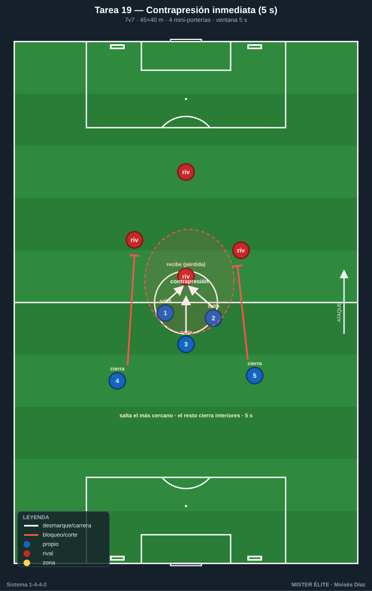
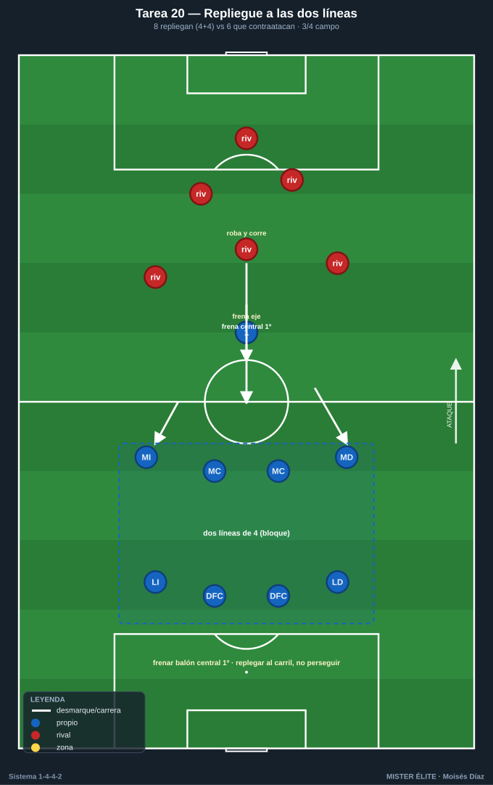
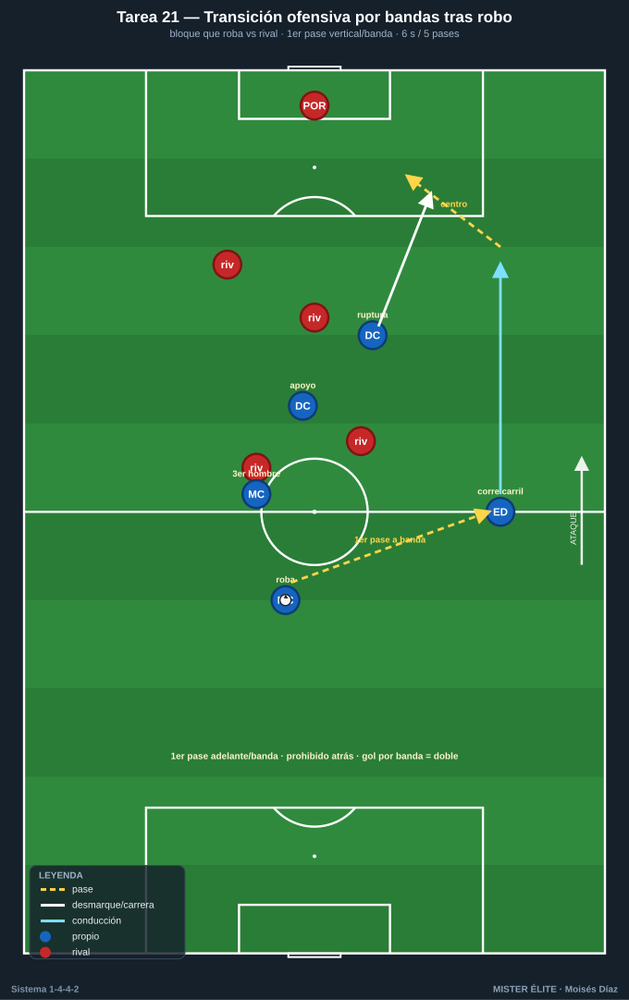
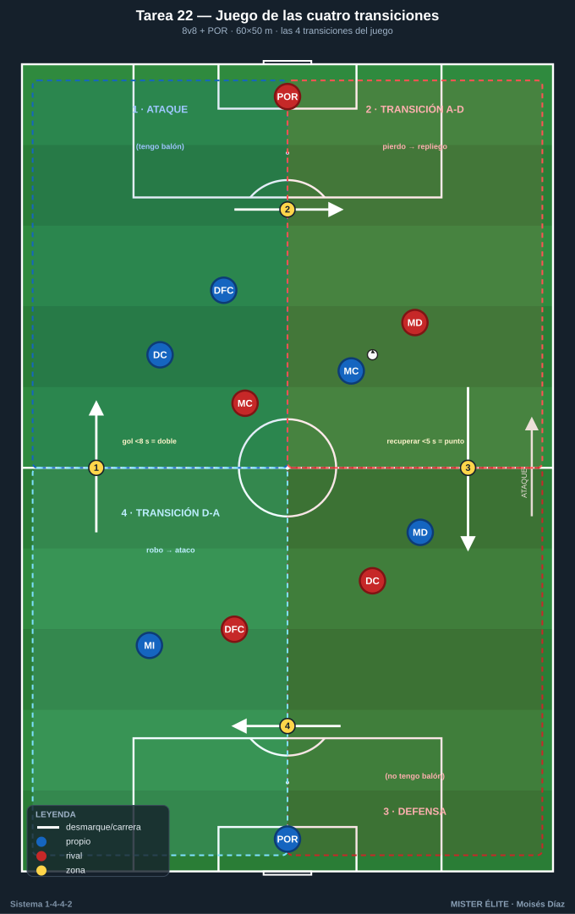

Bloque 5 — Transiciones (Tareas 19–22)
Marco teórico: Módulo 04 — Transiciones y balón parado. Convención de posiciones y distancias en el README.
El 1-4-4-2, con sus dos bloques, es fuerte en transición defensiva si reacciona rápido (contrapresión inmediata o repliegue ordenado a las dos líneas) y letal en transición ofensiva por las bandas y los espacios a la espalda que dejan los rivales al perder el balón. Estas tareas entrenan el primer comportamiento tras la pérdida y tras el robo.
Cómo leer las fichas. Objetivo · Organización · Desarrollo · Provocaciones · Variantes · Coaching · Duración / Categoría. Categorías: F / A / S. "Provocación" = regla artificial que penaliza lo incorrecto y premia lo deseado.
TAREA 19 — Contrapresión inmediata tras pérdida (ventana 3-5 s) (juego condicionado)
Nota: la teoría fija una ventana de 3-5 segundos para la contrapresión (módulos 02 §3.3 y 04 §2). Esta tarea trabaja el extremo de esa ventana fijando un umbral de 5 s como provocación; la variante de 3 s endurece la exigencia.
- Objetivo: que el equipo presione de inmediato en el punto de la pérdida (los más cercanos saltan, el resto cierra líneas de pase) para recuperar arriba o ganar tiempo de repliegue.
- Tipo de tarea: juego condicionado de transición.
- Organización:
- Jugadores: 7v7 / 8v8.
- Espacio: 45×40 m con 4 mini-porterías (2 por equipo).
- Material: mini-porterías; balones para reinicios continuos.

- Desarrollo: Posesión con objetivo de marcar en mini-porterías. En el momento de la pérdida, el equipo que pierde tiene 5 segundos para recuperar mediante contrapresión; si no lo logra, se repliega.
- Provocaciones:
- Recuperar en <5 s tras perder = punto extra (premia la reacción inmediata).
- Los 2–3 jugadores más cercanos a la pérdida DEBEN saltar; el resto cierra interiores (no todos a por el balón).
- Si el rival supera la contrapresión, los jugadores lejanos deben replegar a su línea inmediatamente.
- Variantes: 3 s (más exigente) → ampliar el espacio → premiar también el repliegue ordenado además de la contrapresión.
- Coaching: reacción instantánea, no lamento; salta el más cercano; cerrar líneas de pase los demás; decisión rápida presionar/replegar; "el primer defensor es el que ha perdido el balón".
- Duración / categoría: 4 series de 4 min (18 min). A / S.
TAREA 20 — Repliegue a las dos líneas tras pérdida (transición defensiva organizada)
- Objetivo: cuando no procede contrapresionar, replegar rápido y reconstruir las dos líneas de 4 compactas, frenando el contraataque rival.
- Tipo de tarea: situacional de transición ataque-defensa.
- Organización:
- Jugadores: 8 (futuro bloque defensivo) atacan una portería; al perder, deben replegar y defender la suya contra 6 que contraatacan.
- Espacio: campo completo o 3/4.
- Material: 2 porterías; balones.

- Desarrollo: El equipo de 8 ataca; en el momento del robo rival suena una señal y deben replegar ordenadamente para formar las dos líneas de 4 antes de que el contraataque llegue. El equipo de 6 intenta finalizar rápido aprovechando el desorden.
- Provocaciones:
- Si el rival finaliza antes de que el bloque esté formado (4+4 con líneas) = gol doble (castiga el repliegue lento).
- El primer jugador en replegar debe ocupar el eje (frenar el balón por el centro), no perseguir por fuera (obliga a proteger el centro primero).
- La defensa gana punto si obliga al rival a parar el contraataque (frenado) sin conceder.
- Variantes: menos atacantes en contra (más fácil) → contraataque con superioridad rival (peor escenario) → combinar con la tarea 19 (contrapresión y, si falla, repliegue).
- Coaching: frenar el balón central primero, recuperar posiciones después; replegar al carril, no perseguir; recomponer las dos líneas como prioridad; comunicación en el repliegue.
- Duración / categoría: 12–16 transiciones en bloques (16–18 min). A / S.
TAREA 21 — Transición ofensiva por bandas tras robo (situacional D-A)
- Objetivo: tras recuperar, atacar rápido el espacio, preferentemente con los delanteros rompiendo y el balón saliendo a banda para correr al espacio que deja el rival.
- Tipo de tarea: situacional de transición defensa-ataque.
- Organización:
- Jugadores: bloque que roba (4 defensas + 2 MC + 2 bandas + 2 DC) vs estructura rival; o versión reducida 6v6.
- Espacio: campo completo o 3/4, con zonas de banda señaladas.
- Material: 2 porterías.

- Desarrollo: Se provoca un robo (servidor o partido). Tras recuperar, el equipo tiene un número limitado de pases/segundos para finalizar, buscando el primer pase vertical o a banda y la ruptura de los delanteros.
- Provocaciones:
- Tras robar, máximo 6 segundos / 5 pases para finalizar (ataque rápido).
- El primer pase tras el robo debe ser hacia adelante o a banda (prohibido pase atrás en la primera acción): fuerza la verticalidad.
- Gol nacido de transición por banda = vale doble.
- Variantes: más tiempo/pases (control de la transición) → menos (transición pura) → escenario de superioridad tras robo (3v2 en campo abierto).
- Coaching: primer pase de calidad y hacia adelante; los delanteros atacan el espacio de inmediato; aprovechar el desorden rival; saber decidir entre ataque rápido y posesión si no hay ventaja.
- Duración / categoría: 12–16 transiciones (16–18 min). A / S.
TAREA 22 — Juego de las cuatro transiciones (juego condicionado integral)
- Objetivo: integrar las dos transiciones (D-A y A-D) en un mismo juego continuo que replica el caos real, con foco en la reacción del 1-4-4-2 en ambos sentidos.
- Tipo de tarea: juego condicionado de transiciones.
- Organización:
- Jugadores: 8v8 + porteros.
- Espacio: 60×50 m, dos porterías grandes.
- Material: porteros; muchos balones en porterías para reinicios sin pausa.

- Desarrollo: Partido continuo. El foco del entrenador es exclusivamente el primer comportamiento tras cada cambio de posesión: contrapresión o repliegue al perder; ataque rápido o consolidación al ganar. Reinicios inmediatos para maximizar transiciones.
- Provocaciones:
- Gol en los primeros 8 s tras un robo = doble (D-A).
- Recuperación en los primeros 5 s tras la pérdida = punto (A-D).
- Balón fuera → reinicio inmediato del portero (cero pausas, máximas transiciones).
- Variantes: acortar tiempos de bonificación; reducir el espacio; añadir comodines neutrales que cambian la igualdad numérica en cada transición.
- Coaching: mentalidad de reacción inmediata en ambos sentidos; los dos primeros segundos lo deciden todo; mantener las referencias del 1-4-4-2 incluso en el caos.
- Duración / categoría: 4 series de 4 min (18–20 min). S (versión reducida para A).